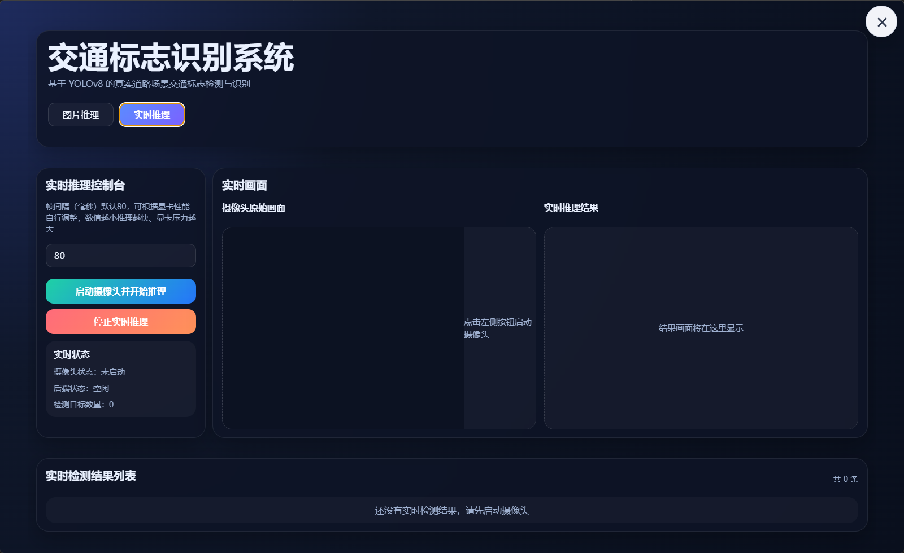
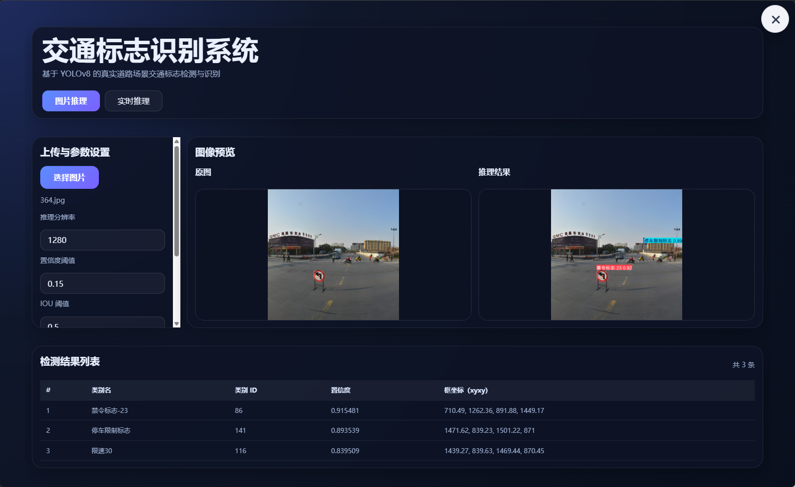
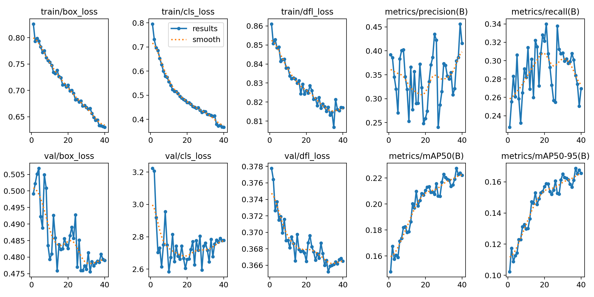
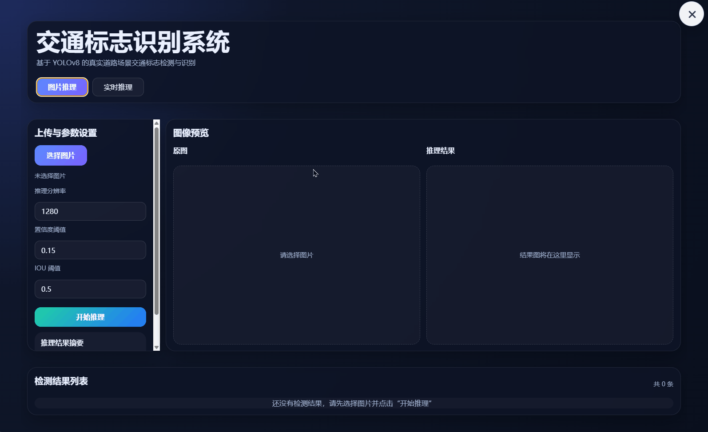
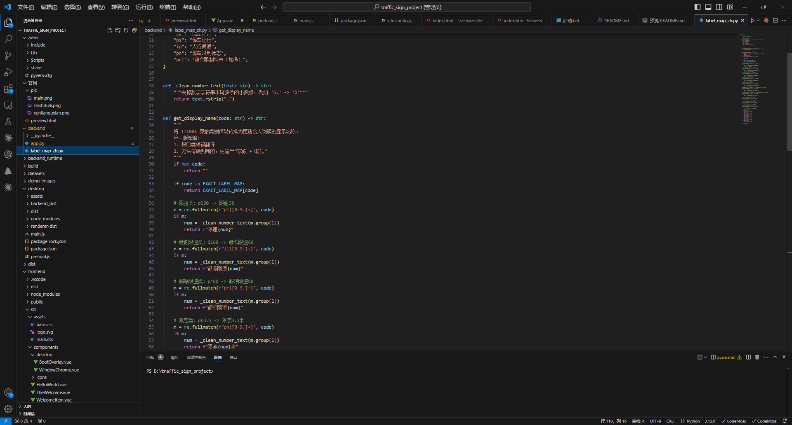

基于 YOLOv8 的
交通标志识别系统
这是一个面向交通场景智能识别需求而设计的综合性项目，围绕“识别精度、推理速度、界面体验、交互细节”四个方向展开实现。 系统支持实时推理与图片推理，结合数据集标注映射优化、训练与预训练实验、UI动效设计和桌面端产品化呈现，形成了一个兼顾技术实现与展示效果的毕业设计作品。
项目介绍
本项目以交通标志识别为核心任务，使用 YOLOv8 目标检测模型完成对道路标志的识别与定位，并通过桌面端应用将模型能力转化为可视化、可交互、可展示的软件系统。 项目在技术实现之外，还注重界面设计、交互细节、展示完整性与用户体验，力求将毕业设计作品呈现为具有产品化气质的智能识别软件。
识别任务定位
围绕交通标志的检测与识别展开，实现目标框标注、类别识别和结果可视化展示，适用于道路场景实验与项目演示。
桌面端产品呈现
结合 Electron + Vue 的界面形态与现代视觉设计思路，将模型识别结果嵌入到统一的软件交互流程中，提升系统完整度。
论文与答辩适配
系统具备实时演示、图片推理、界面展示、功能截图与流程说明等多个维度，便于中期答辩、最终答辩与成果展示使用。
项目优势
与单纯训练模型的实验性项目不同，本系统在“算法能力 + 功能完整性 + 视觉表现力 + 交互细节”多个维度同步推进，既有技术实现，也有软件产品形态。
双模式推理
同时支持实时推理与图片推理，可覆盖动态视频流演示与静态样本检测两种常见场景。
数据映射优化
对原始数据集标注信息进行映射处理，使模型输出结果更易于理解和展示，增强系统可读性。
训练流程完整
包含测试训练、预训练引入、参数调整与结果验证，具有较完整的模型实验流程与优化逻辑。
界面观感突出
通过按钮光效、状态反馈、弹性动效、旋转与展开过渡等设计，增强视觉层次与科技感。
设计理念
本项目在设计上强调“科技感、秩序感、响应感、产品感”四个关键词。界面布局追求清晰的信息层级，交互动效强调柔和、准确、具有反馈性，整体视觉风格采用偏深色背景、蓝青紫渐变、玻璃质感卡片与发光元素，形成现代智能系统的视觉氛围。
以深色科技风为主，强化专业感与未来感
通过深色背景承载高亮信息，结合蓝色、青色、紫色的渐变光效，形成稳定、冷静又具有科技感的视觉风格，使界面更符合人工智能项目的展示定位。
以微动效增强操作反馈，提升界面生命力
在右上角关闭按钮、功能按钮和切换区域中引入展开、旋转、发光、悬停、过渡等动画，使交互过程不再生硬，增强软件体验的完整性。
突出核心功能路径，减少视觉干扰
将用户最关注的实时推理、图片推理、识别结果展示等内容放在主要视觉区域，使界面在演示时能够快速传达项目重点。
不仅展示模型，更展示完整的软件作品
设计目标不仅是“能识别”，还包括“好展示、好理解、好操作”，因此在视觉规范、交互反馈、布局节奏和页面结构方面都进行了整体化处理。
系统架构
系统从数据、模型到应用界面形成了较为完整的实现链路：前端负责界面展示与交互流程，后端负责模型推理与结果返回，模型部分则围绕数据集处理、训练优化和识别效果展开持续迭代。
数据与训练层
- 交通标志数据集整理
- 类别标注与映射处理
- 测试训练与预训练实验
- 参数调整与结果验证
识别与推理层
- YOLOv8 模型加载与推理
- 图片推理与实时推理双支持
- 识别结果解析与类别映射
- 检测框与文本结果展示
界面与展示层
- 桌面端视觉界面设计
- 按钮动效与光效反馈
- 模块化信息展示布局
- 答辩与项目演示友好呈现
项目成果展示
下方区域仅对程序进行部分展示，更多功能请下载程序安装包，自行体验。
系统主界面 / 项目总览图
整体暗黑风格，操作按钮明显，功能简单易懂。

实时推理界面
支持实时推理与图片推理双模式使用，显卡占用率低，推理流畅，推理几乎无延迟。

图片推理结果
同时支持实时推理与图片推理，可覆盖动态视频流演示与静态样本检测两种常见场景。

训练曲线 / 实验图表
采用数万张高清真实街景图训练，更符合中国真实街道场景，模型准确率高。

按钮动效细节图
制作了大量的按钮交互效果、鼠标触碰按钮会产生辉光效果和轻微上浮效果。

数据映射 / 标签优化图
对数据集原始输出数据进行了中文映射处理，更便于人阅读，可直接看到程序标注的中文结果。
